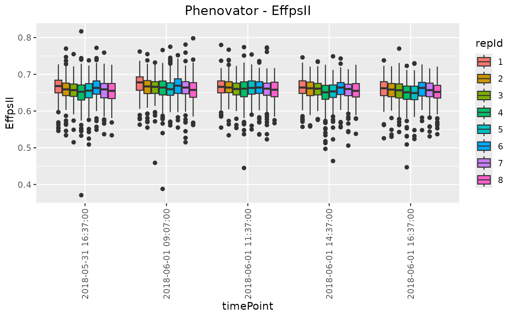
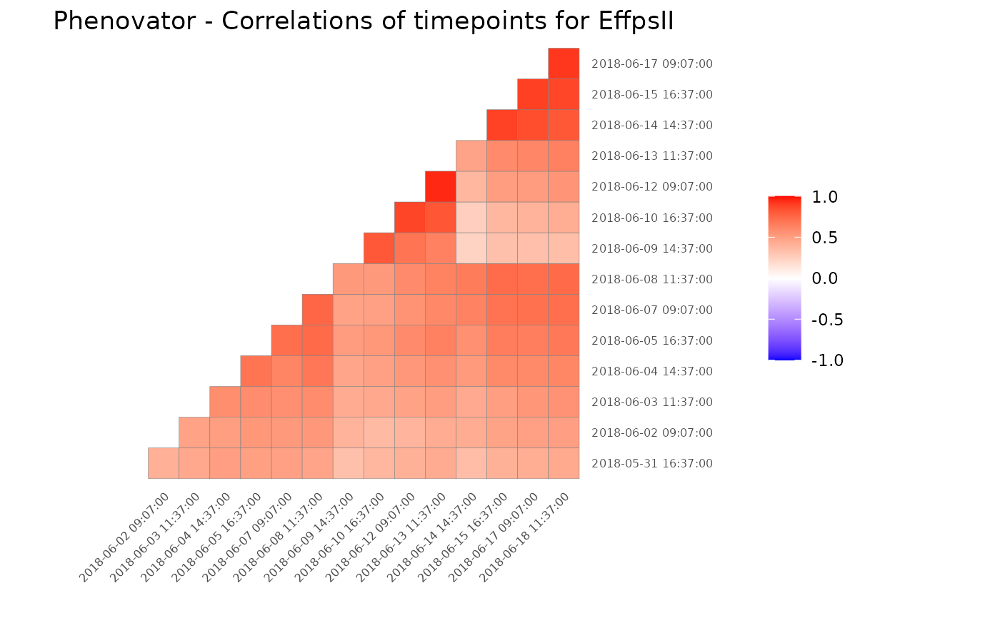
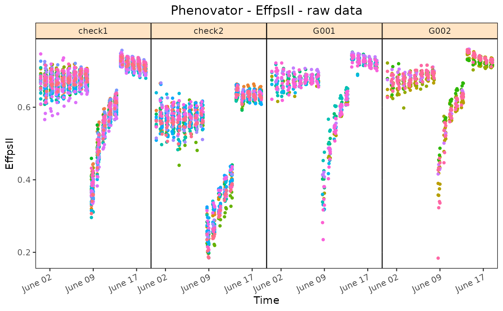

Plotting function for objects of class TP. Plots the layout of the platform for different time points within the TP object. Also a boxplot can be made for selected traits and time points and a plot of correlations between time points. Finally the raw data can be displayed per genotype. A detailed description and optional extra parameters for the different plots are given in the sections below.
Arguments
- x
An object of class TP.
- ...
Extra plot options. Described per plotType in their respective section.
- plotType
A single character string indicating which plot should be made. See the sections below for a detailed explanation of the plots.
- timePoints
A character or numeric vector indicating the time points to be plotted. When using a character string to reference a time point, the value has to be an exact match to one of the existing timePoints. When using a number it will be matched by its number ("timeNumber") in the timePoints attribute of the TP object.
- title
A character string used as title for the plot. If
NULLa default title is added to the plot depending onplotType.- traits
A character vector indicating the traits to be plotted. If
plotType= "layout" only a single trait may be plotted. For the other plotTypes, providing multiple traits will create multiple plots.- output
Should the plot be output to the current device? If
FALSEonly a (list of) ggplot object(s) is invisibly returned. Ignored ifoutFileis specified.- outFile
A character string indicating the .pdf file to which the plots should be written. If
NULL, no file is written.- outFileOpts
A named list of extra options for the pdf outfile, e.g. width and height. See
pdffor all possible options.
Value
Depending on the plot type, either a ggplot object or a list of ggplot objects is invisibly returned.
Layout Plot
Plots the layout of the platform for selected time points (all available time
points by default). This plot can only be made for time points that contain
both row (rowNum) and column (colNum) information. If either
one of those is missing the timePoint is skipped with a warning.
If replicates (repId) are available, a black line is plotted between
diffent replicates. Missing plots are indicated in white. This can either be
single plots in a time point or complete missing columns or rows.
Extra parameter options:
- showGeno
Should individual genotypes be labeled in the plot? Defaults to
FALSE- highlight
A character vector of genotypes to be highlighted in the plot.
Box Plot
Creates a boxplot per selected trait grouped by time point (all available time points by default). Extra parameter options:
- groupBy
A character string indicating a column in
TPby which the boxes in the plot should be grouped. By default the boxes are grouped per time point.- colorBy
A character string indicating a column in
TPby which the boxes are colored. Coloring will be done within the groups indicated by thegroupByparameter, e.g. per replicate within each time point usingrepId.- orderBy
A character string indicating the way the boxes should be ordered. Either "alphabetic" for alphabetical ordering of the groups, "ascending" for ordering by ascending mean, or "descending" for ordering by descending mean. By default boxes are ordered alphabetically.
Correlation Plot
Draws a heatmap of correlations of raw data between time points per selected trait for selected time points (all available time points by default).
Raw data plot
Create a plot of the raw data of the selected trait over time for selected
time points (all available time points by default). Plots are grouped by
genotype, or by genotype x treatment when the geno.decomp option is
specified. By default, all the genotypes will be plotted which might take
time and memory when the output is not saved in a file (see parameter
outFile). Extra parameter options:
- genotypes
A character vector indicating the genotypes to be plotted.
- geno.decomp
A character vector indicating the grouping of the genotypes to be plotted.
- plotLine
Should the data be displayed as lines? Default is FALSE.
See also
Other functions for data preparation:
as.data.frame.TP(),
createTimePoints(),
getTimePoints(),
removeTimePoints(),
summary.TP()
Examples
# \donttest{
## Create a TP object containing the data from the Phenovator.
phenoTP <- createTimePoints(dat = PhenovatorDat1,
experimentName = "Phenovator",
genotype = "Genotype",
timePoint = "timepoints",
repId = "Replicate",
plotId = "pos",
rowNum = "y", colNum = "x",
addCheck = TRUE,
checkGenotypes = c("check1", "check2",
"check3", "check4"))
#> Warning: The following plotIds have observations for less than 50% of the time points:
#> c24r41, c7r18, c7r49
## Plot the layout for the third time point with the check genotypes
## highlighted
plot(phenoTP,
plotType = "layout",
timePoints = 3,
highlight = c("check1", "check2", "check3", "check4"))
## Create a boxplot for "EffpsII" with 5 time points and boxes colored
## by "repId" within time point.
plot(phenoTP,
plotType = "box",
traits = "EffpsII",
timePoints = 1:5,
colorBy = "repId")

## Create a correlation plot for "EffpsII" for a selection of time points.
plot(phenoTP,
plotType = "cor",
traits = "EffpsII",
timePoints = seq(from=1, to=73, by=5))

## Plot the raw data of four genotypes for the trait "EffpsII":
plot(phenoTP,
traits = "EffpsII",
plotType = "raw",
genotypes = c("G001","G002","check1","check2"))

# }